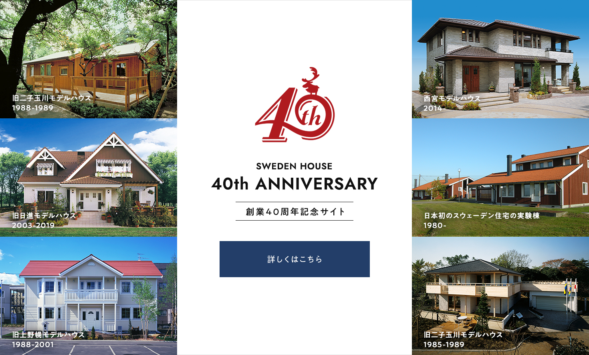
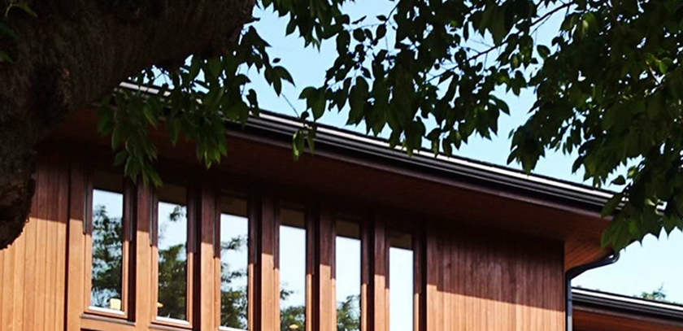
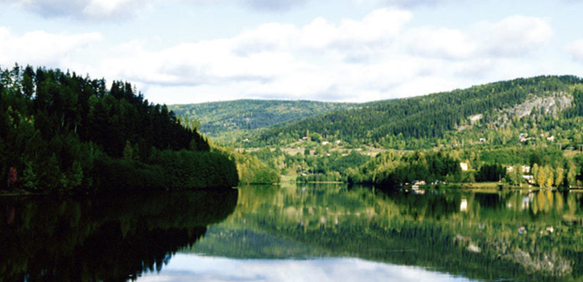
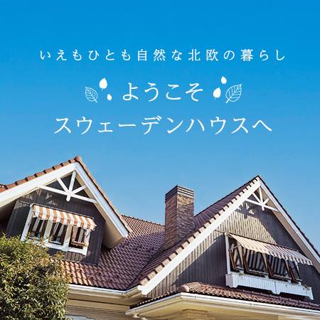
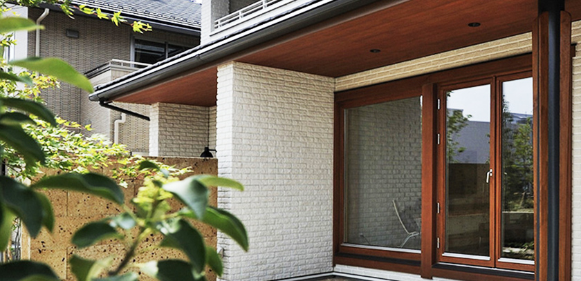
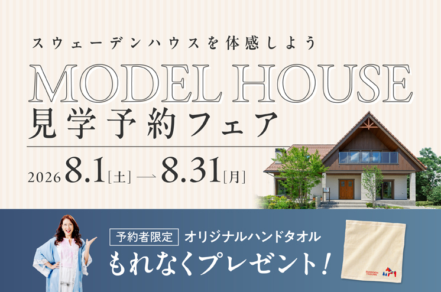

① 会社・基本データ（規模・エリア・対応工法）

スウェーデンハウスは1984年、トーモク・北海製罐・三菱地所の3社共同出資により設立された北欧輸入住宅専門メーカー。「北欧の家を、そのまま日本で。」をコンセプトに、スウェーデンから木材・窓・構造パネルを直輸入し、高断熱・高気密・木製サッシ3層ガラスという唯一無二の仕様で家づくりを行う。
オリコン顧客満足度調査ハウスメーカー注文住宅部門で12年連続総合1位（2015年〜2026年・史上初の最長記録）。2026年は81.0点で総合第1位、さらに全13評価項目で1位を獲得（全項目1位は2021年〜2026年の6年連続）という住宅業界で他に例がない圧倒的な実績を誇る。
| 項目 | 内容 |
|---|---|
| 設立 | 1984年3月1日 |
| 本社 | 東京都世田谷区太子堂4-1-1 キャロットタワー23F |
| 資本金 | 4億円 |
| 売上高 | 393億円（2025年3月末） |
| 従業員数 | 759名（2025年3月末時点、役員・パート除く） |
| 年間着工棟数 | 約1,800棟 |
| 対応エリア | 北海道〜九州（沖縄除く / 拠点66ヶ所・展示場56ヶ所） |
| 主な工法 | 木質パネル工法（モノボックス構造） |
| 親会社 | 株式会社トーモク（東証プライム 3946） |
顧客満足度データ（オリコン）
| 指標 | 数値 |
|---|---|
| 2026年オリコン顧客満足度 | 総合第1位 81.0点 12年連続1位（2015年〜2026年・史上初の最長記録） |
| 全13評価項目 | 全項目で1位（2021年〜2026年の6年連続 / 「住居の性能」86.2点が最高スコア） |
| 2026年 2階建てカテゴリ | 第1位（80.8点） |
| 2025年オリコン顧客満足度 | 総合第1位（11年連続） |
「12年連続1位・全13項目1位」は住宅業界初。2026年版では81.0点で総合1位を獲得し、デザイン・性能・価格の納得感・アフターサービスなど全13項目すべてで1位を取るという圧倒的な支持を得ている。特に「住居の性能」86.2点は全評価項目中の最高スコア。
② 商品ラインナップと価格
2026年現在、坪単価の目安は全商品平均で約88万円（施主アンケート平均87.9万円）。ボリュームゾーンは80〜100万円。ヘンマベスト（65万円〜）からプレミエゴーデン（100万円超）まで幅広い。
注文住宅（自由設計）
| 商品名 | 坪単価目安 | 主な特徴 |
|---|---|---|
| hus Premie Gården（ヒュースプレミエゴーデン） | 80〜100万円 | 最上位モデル。上質な暮らしを追求した高級邸宅 |
| Radiance（レイディアンス） | 85〜100万円 | 開放感を重視したベーシックモデル。都市型住宅 |
| HUS ECO ZERO（ヒュースエコゼロ） | 80〜100万円 | ZEH基準対応の高性能モデル |
| mjuk（ミューク） | 80〜100万円 | 「やわらかい」を意味する女性視点の住まい |
| Björk（ビヨルク） | 75〜90万円 | 平屋住宅。バリアフリー設計。「白樺」の意味 |
セミオーダー・規格住宅
| 商品名 | 坪単価目安 | 主な特徴 |
|---|---|---|
| Hemma Bäst!（ヘンマベスト） | 65〜80万円 | 170プランから選択するセレクト型。最もコスパが高い |
| SAKITATE nästa（サキタテネスタ） | 70〜90万円 | 次世代版セミオーダー。楽しく合理的にプランづくり |
坪数別の建築総額シミュレーション
| 坪数 | 本体工事費 | 建築総額（目安） | 月々返済額（35年/1.5%） |
|---|---|---|---|
| 25坪 | 2,200万円 | 約2,900万円 | 約89,000円 |
| 30坪 | 2,640万円 | 約3,500万円 | 約108,000円 |
| 35坪 | 3,080万円 | 約4,000万円 | 約123,000円 |
| 40坪 | 3,520万円 | 約4,600万円 | 約141,000円 |
| 45坪 | 3,960万円 | 約5,200万円 | 約160,000円 |
総額は本体価格の約1.3倍を見込む：付帯工事費・諸経費（20〜30%）・外構費（150〜250万円）は別途必要。さらに木製サッシのメンテナンス費用（2〜3年に1度の塗装）もライフサイクルコストとして計画に入れておくべき。
③ 構造・耐震性能

木質パネル工法（モノボックス構造）
2×4工法をベースに独自進化させた「木質パネル工法」。壁・床・屋根の6面体を強固に接合して一体化させた「モノボックス構造」で、地震の揺れを「面」で受け止め分散させる。構造材には45mm×120mmの高強度材を使用（通常の2×4材38mm×89mmの約1.6倍の断面積）。
| 項目 | 詳細 |
|---|---|
| 工法 | 木質パネル工法（枠組壁工法ベース） |
| 構造材寸法 | 45mm×120mm（通常2×4の約1.6倍の断面積） |
| 壁厚 | 120mm（一般的な2×4の89mmに対し約1.35倍） |
| 構造方式 | モノボックス構造（6面体ボックス構造） |
| 耐震等級 | 全棟：耐震等級3（最高等級） |
| 木材 | スウェーデン産の良質な北欧材（寒冷地で育った高密度の木材） |
実大振動実験（2003年実施）
| 項目 | 詳細 |
|---|---|
| 最大加振 | 阪神・淡路大震災の2倍相当にあたる1,636ガルを想定入力（実験中の最大記録値は1,920ガル） |
| 加振回数 | 震度6以上の振動を合計19回 |
| 補修 | 実験中の構造補修は一切なし |
| 結果 | 構造上の有害な損傷なし。生活空間を守り抜いた |
| 応答加速度 | 小屋裏で約2,100ガル（地面の1.29倍） |
免震・制震装置が不要な理由：モノボックス構造自体の剛性が高く、地面の揺れの1.29倍程度に揺れを抑制（一般住宅は2倍）。免震・制震装置なしでも大地震後に大規模補修なしで住み続けることが可能。構造体そのものの強さで地震に耐える設計思想。
④ 断熱性能
UA値と断熱構造
スウェーデンハウスの標準UA値は0.36〜0.38 W/m²K。スウェーデンの住宅基準（0.40 W/m²K）を上回り、断熱等級6（HEAT20 G2水準）をクリア。大手の中では一条工務店に次ぐ2位の断熱性能。
| 部位 | 断熱材 | 厚さ |
|---|---|---|
| 外壁 | グラスウール（高性能） | 120mm（一般2×4の89mmに対し約1.35倍） |
| 天井 | グラスウール（ブローイング） | 約200〜300mm |
| 床 | グラスウール | 約100〜200mm |
木製サッシ3層ガラス窓（最大の差別化ポイント）
| 項目 | スペック |
|---|---|
| サッシ素材 | 木製サッシ（アルミの約1,700倍、樹脂の約1.4倍の断熱性） |
| ガラス | 3層ガラス（4mm厚×3枚） |
| 中空層 | 12mm×2層（一般複層ガラス6mmの2倍） |
| ガス充填 | アルゴンガス封入（2つの中空層すべて） |
| コーティング | Low-Eコーティング |
| 遮音性能 | 窓で-32dB / 外壁で-44dB低減 |
他社との断熱性能比較
| ハウスメーカー | UA値（代表値） | 断熱等級 |
|---|---|---|
| 一条工務店（i-smart） | 0.25 | 等級7 |
| スウェーデンハウス | 0.36〜0.38 | 等級6 |
| 三井ホーム | 0.43 | 等級5〜6 |
| 住友林業 | 0.46 | 等級5 |
| 積水ハウス（木造） | 0.46〜0.60 | 等級5 |
| ヘーベルハウス（鉄骨） | 0.55〜0.60 | 等級5 |
| （参考）国の省エネ基準 | 0.87 | 等級4 |
木製サッシ3層ガラスは大手唯一の標準仕様：住宅の熱損失の約50〜70%は窓から発生する。木製サッシを標準採用しているのは大手ではスウェーデンハウスのみ。断熱等級7（UA値0.26以下）には届かないが、窓の快適性（結露なし・静粛性・暖かさ）では業界随一。
⑤ 気密性能
C値（相当隙間面積）
| 項目 | 数値 |
|---|---|
| 全棟実測平均C値 | 0.64 cm²/m²（2022年度引渡し全棟平均） |
| 全棟測定 | 全棟実施（1999年「CQ+24」システムから継続） |
| 一般住宅の目安 | 1.0〜2.0 cm²/m² |
全棟高性能保証表示システム「CQ+24」
1999年にスタートした独自制度。一棟一棟、気密性能（C値）と断熱性能を実測し、数値を表示して引き渡す。大手で全棟気密測定を実施しているのは一条工務店とスウェーデンハウスの2社のみ。「高性能」を口約束ではなく数値で証明する姿勢が12年連続オリコン1位の信頼を支えている。
他社との気密性能比較
| ハウスメーカー | C値 | 全棟測定 |
|---|---|---|
| 一条工務店 | 0.59（全棟平均） | 全棟実施 |
| スウェーデンハウス | 0.64（全棟平均） | 全棟実施 |
| 住友林業 | 非公表 | 希望者のみ |
| 積水ハウス | 非公表 | 実施せず |
| ヘーベルハウス | 非公表 | 実施せず |
| ミサワホーム | 非公表 | 実施なし |
「高断熱×高気密」を数値で保証する2社：全棟気密測定を行い数値を公表しているのは一条工務店（C値0.59）とスウェーデンハウス（C値0.64）の2社だけ。この姿勢こそがオリコン1位の信頼の源泉。
⑥ 換気・空調

24時間熱交換型換気システム（第一種換気・標準装備）
| 項目 | スペック |
|---|---|
| 方式 | 第一種全熱交換型換気システム |
| 換気頻度 | 住宅全体の空気が2時間に1回入れ替わる設計 |
| 熱交換効率 | 約70〜80% |
| フィルター | PM2.5対応微小粒子用フィルター標準装備 |
| 花粉対策 | 屋外のチリ・ホコリ・花粉の侵入を抑制 |
| メンテナンス | フィルター定期交換（DIY可能） |
高断熱・高気密・計画換気の三位一体
スウェーデンハウスの設計思想は「高断熱・高気密・計画換気」の三位一体。断熱だけ、気密だけでは意味がなく、3つが揃って初めて快適な室内環境が実現するという考え方。スウェーデンの厳しい冬で培われた技術を日本に持ち込んでいる。
- 高気密（C値0.64）との組み合わせで計画換気が正確に機能
- 熱交換素子により冷暖房した快適な室温を保ちながら新鮮な外気と入れ替え
- 各所に設置された給気口から新鮮な空気を供給、換気システム本体が汚れた空気を回収
⑦ デザイン

北欧デザインの特徴
| カテゴリ | 内容 |
|---|---|
| 外観 | 赤・青・白など鮮やかな色の外壁。北欧の街並みを彷彿とさせるデザイン |
| 内装 | 明るい木の色をベース。木窓やタイルで一般住宅と一線を画す |
| 窓 | 木製サッシの温かみ。回転窓は外国映画のような佇まい |
| 基本理念 | 「心の豊かさ」。機能美と暮らしの質を両立するスウェーデンの生活文化がベース |
1200mmワイドモジュール
| 項目 | 詳細 |
|---|---|
| 基準モジュール | 120cm×120cm（日本の一般的な91cm×91cmの約1.3倍） |
| 廊下幅 | 横に付き添って移動できる広さ |
| 階段幅 | 920mmのゆったり設計。段差も緩やか |
| 車椅子対応 | 将来の車椅子使用にもストレスなく対応可能 |
| バリアフリー | 「温度のバリアフリー」「空間のバリアフリー」を標準で実現 |
グッドデザイン賞
2014年度グッドデザイン賞受賞（「木製サッシ3層ガラス網無し防火窓」）。見た目の美しさだけでなく、騒音や結露に対する快適性も評価された。
北欧スタイルの本質：スウェーデンハウスのデザインは単なる「外国風の見た目」ではない。120cmモジュールの広い廊下、温度差のないバリアフリー空間、木製窓の温もり——すべてが「50年以上住み続けること」を前提に設計されている。北欧家具・インテリアとの親和性は業界随一。
⑧ 保証・メンテナンス
保証体系
| 内容 | 期間 | 条件 |
|---|---|---|
| 構造耐力上主要な部分 | 初期10年 | 法律の瑕疵担保責任 |
| 延長保証（プラス10年保証） | 最大20年 | 10年目の有償定期点検＋会社指定の必要メンテナンス工事（有償）を実施した住宅が対象 |
| シロアリ予防 | 長期持続 | ホウ酸処理（揮発せず長期間効果が持続。一般薬剤の3〜5年効果と比較して優位） |
50年間無料定期検診「ヒュースドクトル50」（2000年スタート）
スウェーデンハウス最大のアフターサービス特徴。「Hus（家の）Doktor（お医者さん）」の意味。自社の住宅を熟知した専任スタッフが定期的に訪問し住まいの健康状態をチェック。引渡し後10年間に計7回の無料定期点検（3ヶ月・6ヶ月・1年・2年・4年・7年・10年）を実施。
| 期間 | 内容 | 費用 |
|---|---|---|
| 引渡し後3ヶ月 | 定期検診 | 無料 |
| 引渡し後6ヶ月 | 定期検診 | 無料 |
| 引渡し後1年 | 定期検診 | 無料 |
| 引渡し後2年 | 定期検診 | 無料 |
| 引渡し後4年 | 定期検診 | 無料 |
| 引渡し後7年 | 定期検診 | 無料 |
| 引渡し後10年 | 定期検診 | 無料 |
| 10年〜50年 | 5年ごとの定期検診 | 無料（希望制） |
- 外部委託せず、自社スタッフが担当（住宅を熟知した専門家）
- 50年目まで5年ごとに不具合箇所を発見・補修提案
- 構造体の初期保証は10年だが、50年間の無料検診で長期的な住まいの健康管理をサポート
他社との保証比較
| ハウスメーカー | 構造体初期保証 | 最大延長 | 無料定期検診 |
|---|---|---|---|
| スウェーデンハウス | 10年 | 20年 | 50年間無料 |
| 一条工務店 | 30年 | 30年 | 30年間 |
| 住友林業 | 30年 | 60年 | 60年間 |
| 積水ハウス | 30年 | 永年 | 永年 |
| ヘーベルハウス | 30年 | 60年 | 60年無償点検 |
| ミサワホーム | 35年 | 永年 | 30年間無償 |
構造体の初期保証10年は大手では短い。延長保証（最大20年）は「10年目の有償定期点検＋会社指定のメンテナンス工事（有償）を実施した住宅」が対象。ただし「50年間無料定期検診（ヒュースドクトル50）」は他社にない独自の強み。保証期間の長さではなく、定期検診による予防保全で住まいを守る思想。ホウ酸によるシロアリ対策の長期持続性も他社にはないメリット。
⑨ 木製サッシ3層ガラス窓 徹底解説

住宅の熱損失の約50〜70%は窓から発生
スウェーデンハウスが木製サッシ3層ガラスにこだわるのは、窓の性能が住宅全体の断熱・気密・遮音・結露防止を左右するため。大手で木製サッシを標準採用しているのはスウェーデンハウスのみ。
木製サッシの10の実力
| 項目 | 詳細 |
|---|---|
| 断熱性 | 木はアルミの約1,700倍、樹脂の約1.4倍の断熱性能 |
| 3層ガラス | 4mm厚ガラス×3枚＋12mm中空層×2（アルゴンガス封入） |
| 結露防止 | 木製サッシ＋3層ガラスで結露がほぼ発生しない |
| 遮音性 | 窓で-32dB。幹線道路沿いでも室内は静か |
| 回転窓 | 約180度縦回転。室内から外側ガラスの清掃が可能 |
| 気密性 | エアタイト構造（気密パッキンで全周を囲む） |
| デザイン | 木の温もりと北欧の佇まい。経年で味わいが増す |
| 防火認定 | 木製サッシ3層ガラス網無し防火窓（2014年グッドデザイン賞受賞） |
| 耐久性 | 適切なメンテナンスで50年以上使用可能 |
| ユニバーサル | 回転窓で内外清掃・換気が容易。高齢者にも扱いやすい |
木製サッシのメンテナンス（重要）
| 項目 | 詳細 |
|---|---|
| 塗装頻度 | 2〜3年に1度の塗り直し推奨 |
| 作業内容 | 木部の塗装（防腐・防水目的） |
| DIY可否 | 自分で塗装可能（専用塗料あり）。業者依頼も可 |
| 放置リスク | メンテナンスを怠ると木部の腐食・機能低下のリスク |
| ガラス注意 | ガス抜けにより曇り発生の場合、全交換で約20万円 |
メンテナンスは「家を育てる」行為：木製サッシは「手間がかかる」のではなく「手をかけられる」素材。2〜3年に1度の塗装をDIYで楽しめるかどうかが、スウェーデンハウスを選ぶ最大の判断基準のひとつ。業者依頼なら1回20〜30万円。この維持費をライフサイクルコストに組み込んで検討すること。
⑩ 客層・向き不向き
年収目安：世帯年収700〜1,000万円がボリュームゾーン。ヘンマベストなら500万円〜でも検討可能。最低年収目安は世帯年収600万円〜。
施主は30〜50歳が中心で、他社より上の年齢層も含む。「暮らしの質」「北欧文化」「長く住み続ける家」に共感する方が多く、北欧家具・インテリア（イケア・マリメッコ等）への関心が高い層との親和性が強い。展示場・モデルハウスでの体感を重視する傾向。
スウェーデンハウスを選ぶ理由TOP3
- 北欧デザインへの強い憧れ — 他社では実現できない唯一無二の世界観
- 断熱・気密性能の高さを体感 — 展示場で「暖かさ」を実感して決める人が多い
- 50年間無料定期検診の安心感 — 長く住み続ける前提での家づくり
向いている人
- 北欧デザインの家に強い憧れがある
- 断熱・気密性能を数値で保証してほしい
- 木製サッシ3層ガラス窓の快適性に魅力を感じる
- 50年間無料定期検診で長期的に家を守ってほしい
- メンテナンスを「家を育てる楽しみ」と捉えられる
- オリコン12年連続1位の実績に安心感を感じる
向かない人
- 断熱性能で業界No.1を求めたい（→一条工務店）
- 大開口・完全自由設計を最重視（→住友林業・積水ハウス）
- 和モダン・シンプルモダンなど多様なデザインが欲しい
- メンテナンスの手間を最小限にしたい（→一条工務店）
- 予算が総額3,000万円以下（→タマホーム）
- 構造体の初期保証30年以上を求める
⑪ 他社との比較表
| 比較 | スウェーデンハウス | 一条工務店 | 住友林業 | 積水ハウス | 三井ホーム | ヘーベル |
|---|---|---|---|---|---|---|
| 坪単価 | 65〜100万 | 80〜105万 | 80〜130万 | 85〜120万 | 80〜130万 | 90〜120万 |
| UA値 | 0.36〜0.38 | 0.25 | 0.46 | 0.46〜0.60 | 0.43 | 0.55〜0.60 |
| C値 | 0.64（全棟） | 0.59（全棟） | 非公表 | 非公表 | 非公表 | 非公表 |
| 設計自由度 | △ | △ | ◎ | ◎ | ○ | ○ |
| 初期保証 | 10年 | 30年 | 30年 | 30年 | 10年 | 30年 |
| 無料検診 | 50年 | 30年 | 60年 | 永年 | — | 60年 |
| オリコン | 1位(12年連続) | 5位 | — | — | — | — |
| 向く人 | 北欧×高性能 | 性能最優先 | 木×自由設計 | ブランド | 洋風デザイン | 鉄骨・耐火 |
スウェーデンハウスの強みは「北欧デザイン×高性能×圧倒的満足度」の三位一体。UA値は一条に及ばないが、木製サッシ・全棟気密測定・オリコン12年連続1位（全13項目1位）という他社にない実績を持つ。
⑫ よくある後悔・失敗事例
後悔①：木製サッシのメンテナンスが想像以上に大変
「2〜3年に1度の塗り直しが必要。最初は楽しかったが、年数が経つと面倒に感じる」「業者に依頼すると1回20〜30万円。自分でやるにも高所の窓は難しい」「メンテナンスを怠ったら窓枠が劣化し始めた」
→ 塗装は「家を育てる楽しみ」と捉えられるかが重要。建てる前にメンテナンスの覚悟ができているか自問する。
後悔②：想定以上に高額だった
「坪単価80万円台と聞いていたが、オプション・外構を含めると総額が大幅UP」「ヘンマベストでコストを抑えるつもりが、結局カスタマイズで予算オーバー」
→ 本体価格だけでなく、外構費・地盤改良費・メンテナンス費を含めた「ライフサイクルコスト」で予算計画を立てる。
後悔③：網戸がオプション＆室内側
「窓が約180度回転する構造のため、網戸は室内側に設置。窓を閉める際に虫が室内に入ることがある」「網戸が標準ではなくオプション扱いだと知らなかった」
→ 契約前に網戸オプションの費用を確認。虫が気になるエリアでは必須。
後悔④：大空間・大開口が苦手
「30畳のリビングを希望したが、木質パネル工法の構造上難しいと言われた」「窓を大きく取りたかったが制限があった」
→ 大開口を最優先するなら住友林業のBF構法や積水ハウスの鉄骨が向いている。
後悔⑤：営業担当・アフターの地域差
「契約後に営業のレスポンスが悪くなった」「メンテナンス担当が他県から来るため対応に時間がかかる」「支店によってアフターサービスの品質に差がある」
→ 契約前に管轄エリアのアフター評判を確認。展示場で複数の営業と接点を持つ。
後悔⑥：北欧スタイル以外のデザインが選べない
「途中で和モダンやシンプルモダンに変更したくなったが、スウェーデンハウスでは実現が難しい」
→ 北欧スタイルに確信が持てない場合は、住友林業や積水ハウスなどデザインの幅が広いメーカーも検討する。
後悔⑦：トリプルガラスのガス抜けリスク
「3層ガラスの中空層からアルゴンガスが抜け、ガラス内に曇りが発生した」「交換費用が1枚あたり約20万円と高額」
→ ガス抜けは経年劣化で発生しうる事象。保証期間内であれば無償対応。定期検診で早期発見。
⑬ まとめ

- オリコン総合1位81.0点・12年連続1位・全13項目1位（2026年）の圧倒的な顧客満足度。12年連続1位は住宅業界で史上初の最長記録、全項目1位は2021年〜2026年の6年連続
- 木製サッシ3層ガラス窓は大手唯一の標準仕様。結露なし・遮音・暖かさの三拍子
- 全棟気密測定（C値0.64）で性能を数値保証。一条工務店と並ぶ2社のみ
- UA値0.36〜0.38は大手2位の断熱性能
- 50年間無料定期検診（ヒュースドクトル50）で長期的に住まいを守る（引渡し後10年間で計7回＋10年以降は5年ごと）
- ホウ酸によるシロアリ対策は長期持続（一般薬剤は3〜5年効果）
- 1200mmモジュールでゆとりのある空間設計。将来のバリアフリーにも対応
- 北欧デザインの統一感。唯一無二の世界観
- 構造体の初期保証10年は大手では短い（積水ハウス・ヘーベルハウスは30年）
- 延長保証（最大20年）は10年目の有償定期点検＋会社指定メンテナンス工事（有償）が条件
- 木製サッシのメンテナンスが2〜3年ごとに必要（業者依頼で1回20〜30万円）
- 大空間・大開口が苦手（木質パネル工法の構造制約）
- 北欧スタイル以外のデザインは不可
- 営業・アフターの地域差あり
- 坪単価が高め（全商品平均約88万円）
こんな人に強くお勧め
「北欧デザインの家に住みたい」「断熱・気密を数値で保証してほしい」「木製サッシ3層ガラス窓の快適性を体感したい」「メンテナンスを家を育てる楽しみと捉えられる」——この4つに共感できるなら、スウェーデンハウスが最有力候補。オリコン12年連続1位・全13項目1位は伊達ではない。